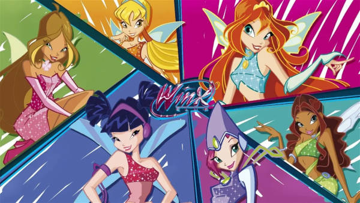

Winx Club ✨
Assisita ao desenhos das melhores fadas
Para assisitir aos eps acesse winx club
Conheça um pouco mais da historia! ir para próxima página
- Bloom 🔥
- Stella🔆
- Flora 🌺
- Musa 🎵
- Tecna 💻
- Aysha 🌊
Para assisitir aos eps acesse winx club
Conheça um pouco mais da historia! ir para próxima página